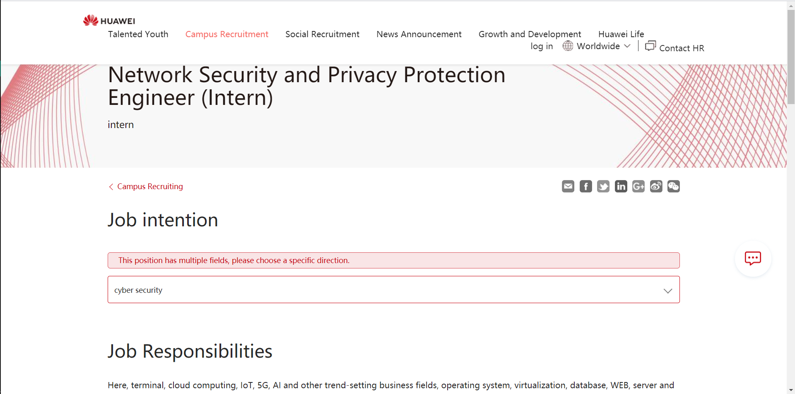
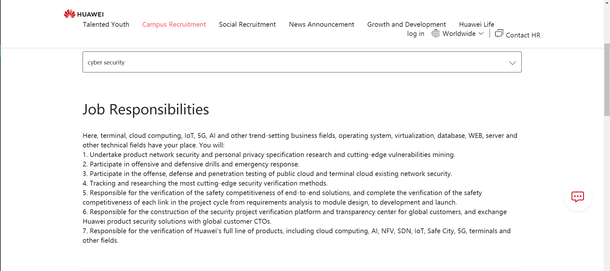
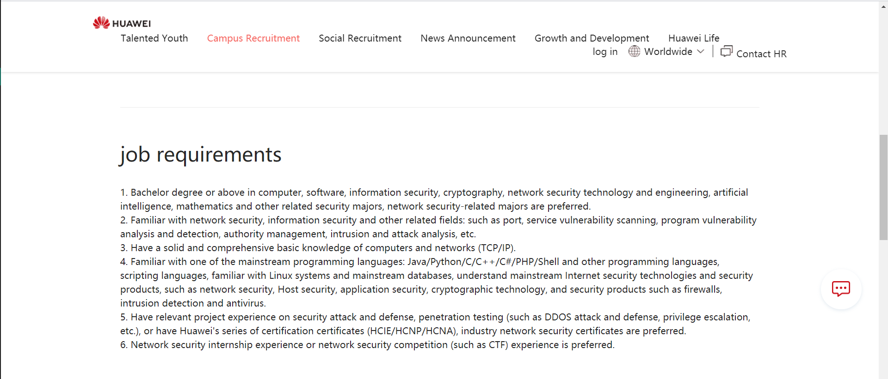
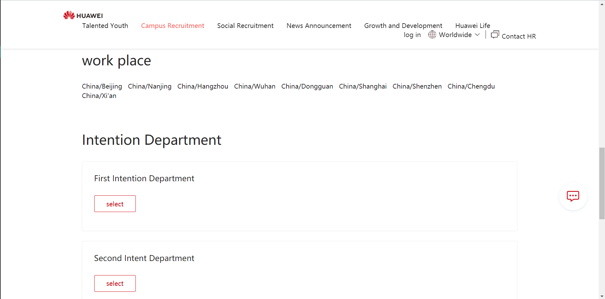

Ideal job - Network Security and Privacy Protection Engineer
   Description
As an intern of Network Security and Privacy Protection Engineer, I need to conduct vulnerability mining of Huawei products for network security and personal privacy, and combine cutting-edge technologies to conduct security testing of products. In addition, I would participate in regular company offensive and defensive drills, as well as emergency response training, and participate in security attack and defense and penetration testing of the company's public cloud and terminal cloud. Except that, I also need to learn about and research cutting-edge security verification techniques, and do some assistence work in developing Huawei product security solutions to customers.
Skills I Have
JAVA Html+css ASP.NET OpenGL Short-term learning ability fast Github Computer Network Operating Systems
Skills I Need
Familiar with network security, information security and other related fields: such as port and service vulnerability scanning, program vulnerability analysis and detection, permission management, intrusion and attack analysis, etc. Familiar with Linux systems and mainstream databases, understanding of mainstream Internet security technologies and security products, such as network security, host security, application security, cryptography, and security products such as firewalls, intrusion detection and anti-virus. Have relevant project experience in security attack and defense, penetration testing (such as DDOS attack and defense, power lifting, etc.) and other related security topics Have Huawei's series of certification (HCIE/HCNP/HCNA) or industry network security certificate Experience in network security internship or network security competition (e.g. CTF)
Learning Plan
Learn python and develop a small project by myself Learn security attack and defense on your own, upload study notes on github and csdn Go for network security certification
Key skills
Python Knowledge of security attack and defense, port and service vulnerability scanning, program vulnerability analysis and detection, privilege management, intrusion and attack analysis, etc. Penetration testing Network security certification